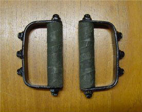
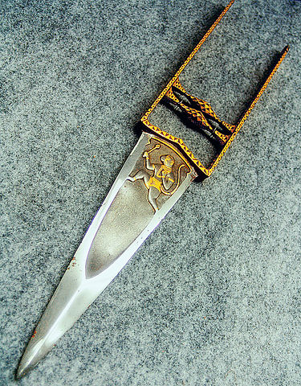
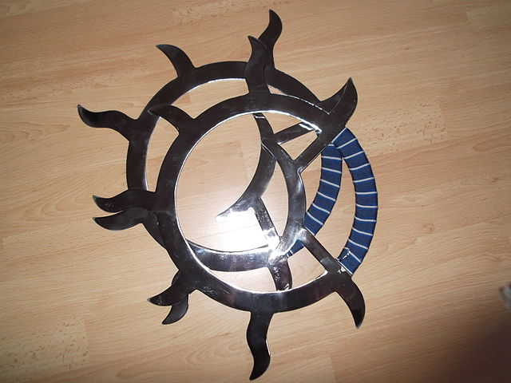

Martial Arts Weapons
This page includes both weapons with the Martial Arts tag, and weapons with the Brawl tag.
Light Martial Arts Weapons
Cestus
The cestus is a simple fist weapon formed by wrapping the hands in leather strips, possibly with the addition of iron studs.
Tekko

Tekko are stirrup-like fist weapons that somewhat resemble brass knuckles. Held by the handle with the bar covering the fingers, tekko add extra oomph to your punches.
Yawara
The yawara is a small iron cylinder a little wider than your palm. Not only does the added mass of the iron give your punch more weight, the bits that stick out on either side of your fist can be used to strike at pressure points and eyes.
Khatar

The khatar or punch-dagger, is basically a knife that you strap to your knuckles. Khatar are usually wielded paired.
Nunchaku
You know what nunchaku look like.
Tiger Claws
Tiger claws are the family of weapons that you get by making yourself Wolverine claws. Some are held with a cross-bar in the palm; others are mounted on the back of a glove. Either way, they’re pointy and good for cutting. Usually 3 or 4 per hand.
War Fan
The war fan is a fan intended to be used in combat. It has a metal-reinforced frame. The war fan is an excellent disarming weapon. In addition, it can often be carried into places where weaponry is not allowed.
Gunsen
The gunsen is a war fan that is wielded open. The gunsen may or may not have paper to fan onself with; the most obvious gunsen are essentially a series of small knives fastened together at the base.
Tessen
The tessen is a war fan that is wielded closed. Often these have genuine paper interiors, but heavy metal outer plates. Some tessen are simply metal clubs that have the shape of a folded fan so that they can be stowed away without raising concern.
Gunbai
The gunbai is a war fan which is not a folding fan. The gunbai is a circular, rectangular, or bell-shaped flat fan reinforced with metal and used to block arrows and deflect swords. The gunbai is the least common variety of war fan.
Wind and Fire Wheel

The wind-and-fire wheel is a metal ring about 12 to 15 inches in diameter; one quarter is grip, the other three-quarters often have spiky protrusions. Wielded in huge circular motions, the wind-fire wheel is effective at disarming.
Medium Martial Arts Weapons
Fighting Chain
The fighting chain is a long, flexible weapon made of slender chain links with weights on either end. The most common style is the chain whip, which has segments that consist of several thin metal rods connected at flex points by rings. Flags and cloth at either end add both flair and control.
Meteor Hammer
The meteor hammer consists of two large, heavy globes on either end of a sturdy chain. It is also known as a flying hammer or dragon fist.
Rope Dart
The rope dart is a chain weapon with a large pointed dart at one end. This weapon is distinct from the chain in that it is mostly wielded with one end rather than both, and from the meteor hammer in that it is sharp rather than blunt and heavy.
Hook Sword
Also called Heaven-and-Earth Sun-and-Moon swords when wielded in a pair, the hook sword is a simple straight sword with a notable hook at one end. This hook makes it excellent for disarming and allows you to extend your reach by hooking the two swords together.
Chicken Sickles
The chicken sickles are hook swords with the addition of a backward spike on the trailing edge. They are wielded with a different grip than hook swords.
Seven-Section Staff
The seven-section staff is a staff that has been broken into several sections and affixed together with flexible ring joints. It is the nunchaku’s grown-up auntie, both larger and scarier. The actual number of segments is usually 3; 7 sections are occasionally seen, as are 2-section staffs.